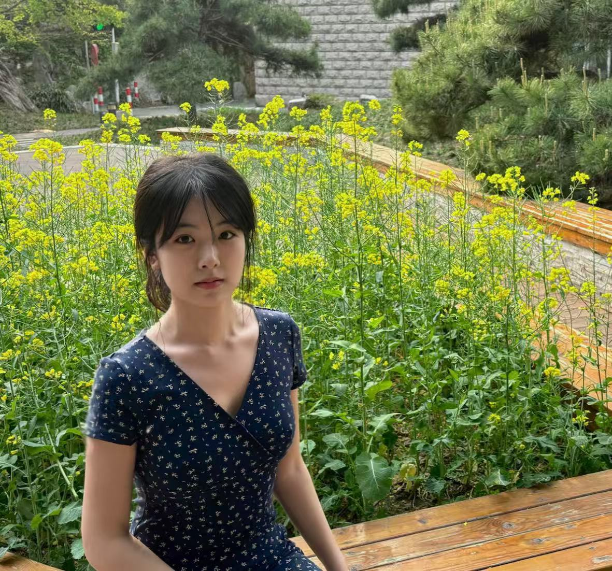

cao791129@qq.com | 18809881055
硕士 | 社会学 (2025.09 - 2026.10)
主修：应用社会学、社会科学研究方法、SPSS数据分析等。
本科 | 戏剧影视文学 (2021.09 - 2025.06)
主修：影视编剧、视听语言、电影理论等。
成绩：专业绩点 3.6/4，平均学分 86.85，获京师三等奖学金（2次）。
拥有“影视文学+社会学”复合背景，具备扎实的影视内容评估、制片统筹及社会学定量/定性分析能力。在爱奇艺等互联网与传媒大厂积累了深度的产品运营及内容统筹经验，擅长从用户需求出发，建立内容量化评估标准体系。
具备较强的跨部门沟通协调能力与团队领导力（曾独立搭建并管理15+人制片团队）。英语能力优秀（雅思7.0，六级556），熟练掌握剪映、PS和Office等办公软件，能快速适应高压、快节奏的工作环境。
| 作品标题 | 作品类型 | 创作日期 | 超链接 | 作品描述 |
|---|---|---|---|---|
| 《世界末日》短片 | 制片 | 2024.12-2025.01 | 点击查看 | 入围多伦多国际诺莱坞电影节等6项国际奖项。负责15+人员剧组招募与统筹，制定精细日程，通过谈判节省15%器材成本。 |
| 《果实熟了》短片 | 副导演/制片 | 2022.12-2023.01 | 点击查看 | 获慕尼黑新浪潮短片电影节等4项国际奖项。负责团队面试与前期勘景节省20%现场时间，深度参与后期配乐及剪辑决策。 |

个人形象照